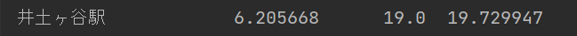

私は、駅別での住みやすさを調べてみました。重視する住みやすさとして、「家賃」「乗換時間」「築年数」を基準にしました。
こちらのグラフは家賃が安い順に50駅ほどあげたグラフです。そして下のグラフは、各駅の平均乗換時間です。
この中で、平均乗換時間２０分程度の駅を書き出すと、
【星川駅・南太田駅・弘明寺駅・井土ヶ谷駅・白楽駅・三ッ沢上町】があげられます。
ここから、さらにこれらの駅にある物件の平均築年数を調べたところ次のように出ました。

これらの中で築年数が短かった上３つ「弘明寺駅・南太田駅・井土ヶ谷駅」は、どれも南区にある京急線の駅名だったことから、私は横浜市南区のエリアをおすすめします。
※良ければこちらもご覧ください。
課題内容を勘違いして作ってしまった、おすすめエリアの資料です。
南区のいいところまとめ